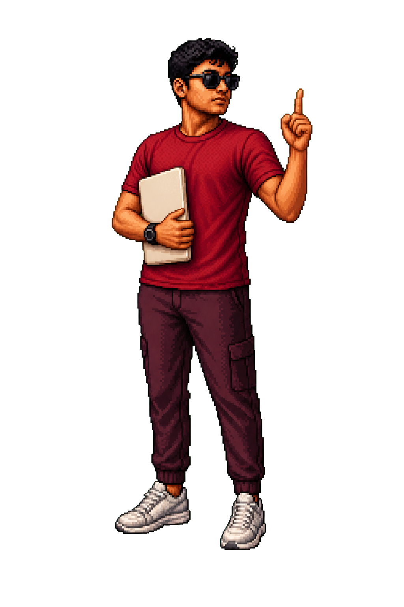

AI voice agents and Vapi alternatives
End-to-end voice builds covering telephony, latency, multilingual calls, agent memory, inbound and outbound workflows, and the tradeoffs behind replacing hosted platforms.
RAPIDXAI VOICE AGENTS ↗ SHREYAS RAJ OS
SHREYAS RAJ OS
Shreyas Raj publishes complete builds across AI voice agents, Vapi alternatives, WhatsApp agents, workflow automation, retail ecommerce and AI websites. The videos show the implementation, not just the finished demo.
End-to-end voice builds covering telephony, latency, multilingual calls, agent memory, inbound and outbound workflows, and the tradeoffs behind replacing hosted platforms.
RAPIDXAI VOICE AGENTS ↗Chat-based selling, lead qualification, product discovery, booking, CRM capture and human handoff, including Shopify and ecommerce use cases when the video supports them.
WHATSAPP AUTOMATION ↗Practical builds with n8n, Claude Code, AI design tools and production web stacks, with the visible interface connected to the work it needs to complete.
AI AGENCY IN PUNE ↗Every card opens the original upload on the official Shreyas Raj YouTube channel.
 VOICE AI / VAPI ALTERNATIVE
VOICE AI / VAPI ALTERNATIVEFull voice stack, working demo and deployment decisions.
 VOICE INFRASTRUCTURE
VOICE INFRASTRUCTURECost, control and architecture tradeoffs behind a Vapi replacement.
 WHATSAPP AGENT
WHATSAPP AGENTConversation design, product interaction and the connected selling flow.
 RETAIL / SHOPIFY
RETAIL / SHOPIFYAn AI-assisted storefront with a real Shopify purchase path.
 WORKFLOW AUTOMATION
WORKFLOW AUTOMATIONA long-form build of the connected business workflow.
 AI WEB DESIGN
AI WEB DESIGNMotion, product storytelling and the finished interactive page.
 STEP-BY-STEP WEBSITE
STEP-BY-STEP WEBSITEThe reference, build decisions and final interaction recreated on camera.
 AI CODING
AI CODINGA complete implementation workflow for builders and operators.

Shreyas Raj is a Pune-based AI YouTuber and the founder of RapidXAI. His public work covers AI voice agents, WhatsApp automation, custom software, AI websites and the commercial lessons behind deploying those systems for businesses.
The personal site documents the founder and the public learning library. RapidXAI owns the service pages, customer proof and direct business enquiries.
Use the videos to inspect the approach. If the workflow fits a real business problem, book directly with the RapidXAI founder.
WATCH ALL VIDEOSBOOK 30 MINUTES